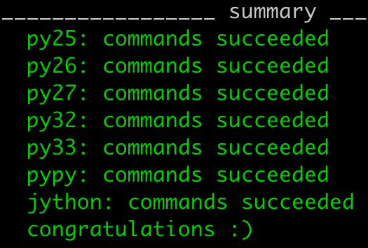
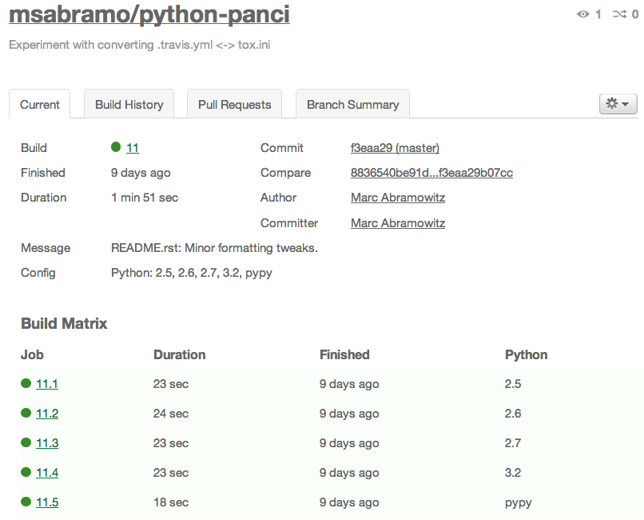
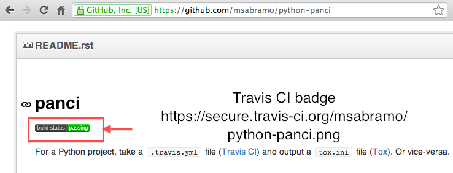

About this talk
- About 40 minutes of material
- Proposal submitted to give this talk at PyCon US 2013 in March
- Let's try taking questions throughout
| z, ? | toggle help (this) |
| space, → | next slide |
| shift-space, ← | previous slide |
| d | toggle debug mode |
| ## <ret> | go to slide # |
| c, t | table of contents (vi) |
| f | toggle footer |
| r | reload slides |
| n | toggle notes |
| p | run preshow |
2to3, distribute's use_2to3)six)with statement (2.5)except...as syntax (2.6)unittest (2.7)even more dramatic differences
print statement vs. print functionstr and unicode vs. bytes and stru and b syntax for string literalshttplib => http.clientStringIO.StringIO => io.StringIOpy.test, execnet)pip install toxvirtualenvsetup.py for projecttox.ini filetoxPythons can be installed manually or you can use something like pythonbrew, but it's your responsibility. This is in constrast to Travis CI, which we will see in a bit...
.ini filetoxtestenv[tox]
envlist = py26, py27, py32, py33, pypy
[testenv]
commands = nosetests
tox in project root directory.
tox -e py32,py33deplist - specify packages needed[testenv:py26]deplist overlaps with putting dependencies in setup.py, but useful for putting test-only dependencies
Languages are C, C++, Clojure, Erlang, Go, Groovy, Haskell, Java, JavaScript (with Node.js), Perl, PHP, Python, Ruby, Scala
Environments include several versions of Python and a host of build tools, data stores, messaging software, etc. which can be useful for testing. Details at http://about.travis-ci.org/docs/user/ci-environment/, http://about.travis-ci.org/docs/user/database-setup/, and http://about.travis-ci.org/docs/user/gui-and-headless-browsers/
.travis.yml.travis.ymllanguage: python
python:
- 2.5
- 2.6
- 2.7
- 3.2
- pypy
install: python setup.py install
script: python setup.py test
git pushTravis CI Build Result Page


annoying to maintain dependencies in setup.py, requirements.txt, tox.ini, and .travis.yml; mention panci & travis2tox & tox2travis...?
Especially focused on Python 2 vs. Python 3
Picture of Python3Porting.com? .notes Migration strategies Preparing for Python 3 Porting with 2to3 Common migration problems Improving your code with modern idioms Supporting Python 2 and 3 without 2to3 conversion Migrating C extensions Extending 2to3 with your own fixers Language differences and workarounds Reorganizations and renamings
str and unicode vs. bytes and stru'' and b''StringIO.StringIO => io.StringIOxrange => rangehttplib => http.clientu syntax for string literals removed in Python 3 but added back in Python 3.3 (PEP 0414)
2to3, 3to2, etc.six can help.2to33to2 (3rd party)-3 option: find problems before running 2to3use_2to3 featureuse_2to3=True in setup.pypython setup.py install.2to3 but runs automatically at install-time.try:
# Python 2
unicode
except NameError:
# Python 3
unicode = strtry:
# Python 2
from StringIO import StringIO
except ImportError:
# Python 3
from io import StringIO
s = StringIO()six modulepip install sixsixfrom six import u, b
print(u('Bj\xf6rk Gu\xf0mundsd\xf3ttir'))sixfrom six import StringIO
s = StringIO()six makes writing Python 2/3 compatible source easiersix to achieve Python 2/3 compatible source